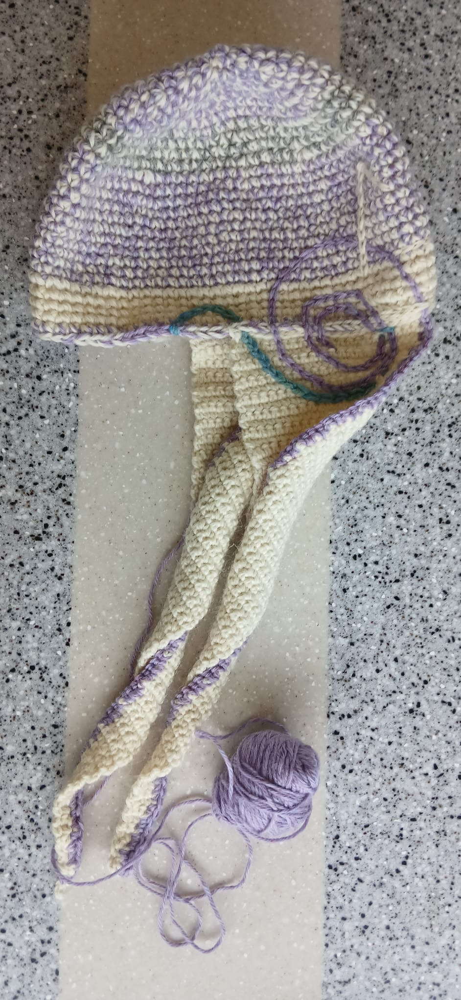
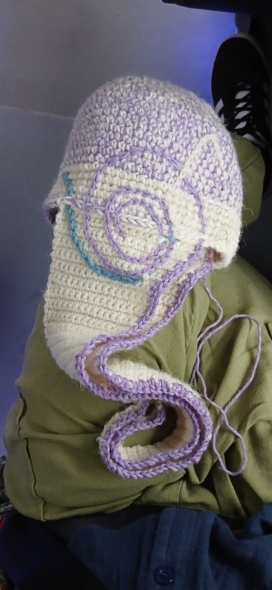
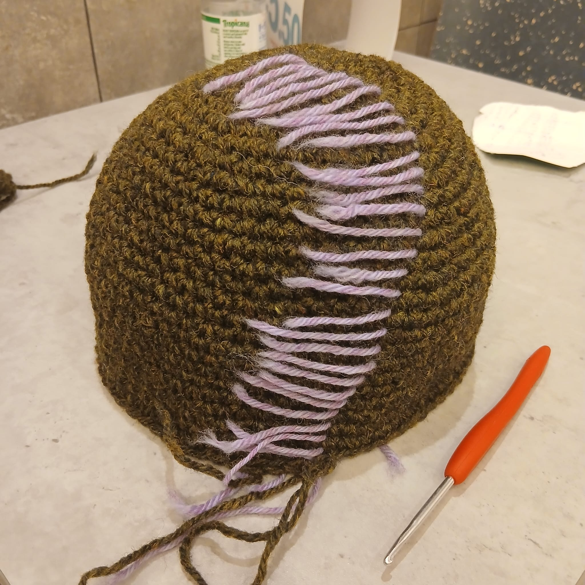
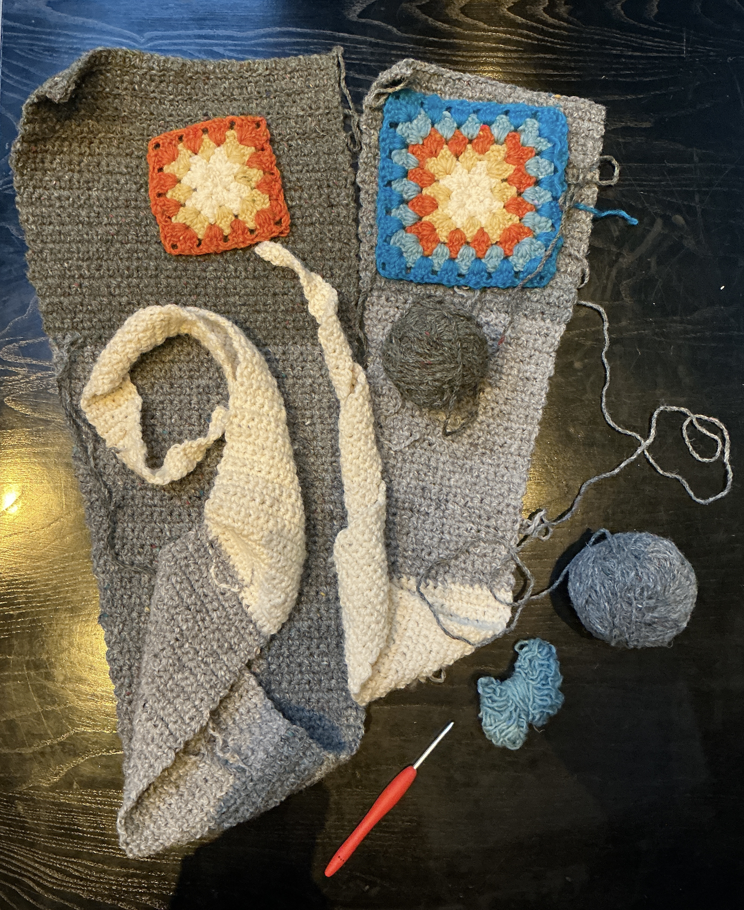
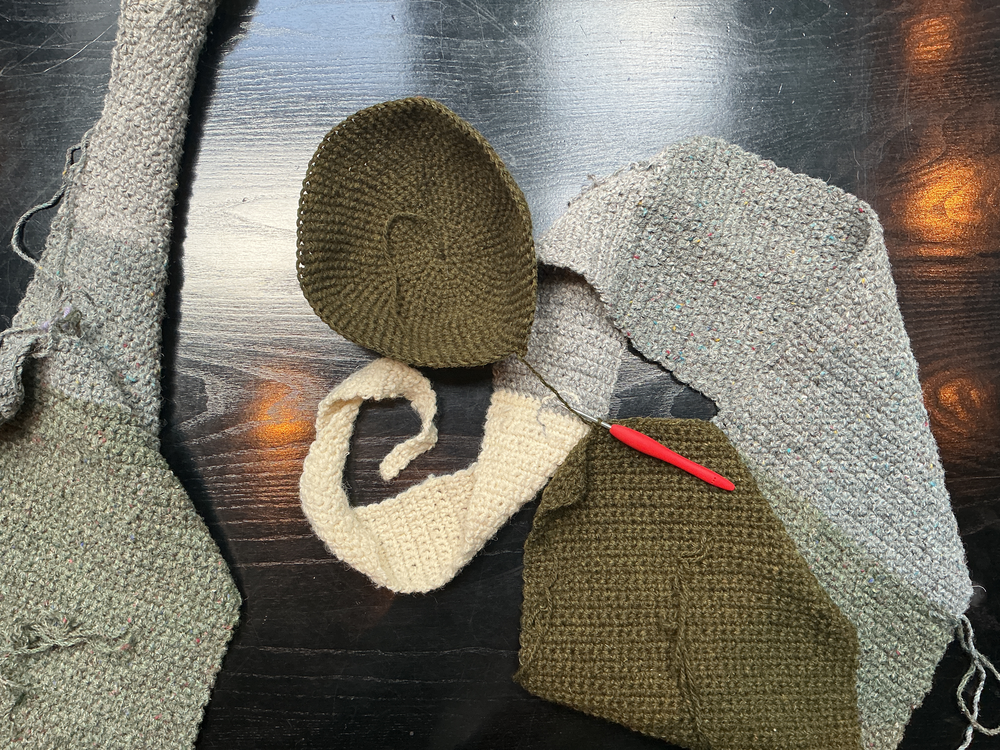
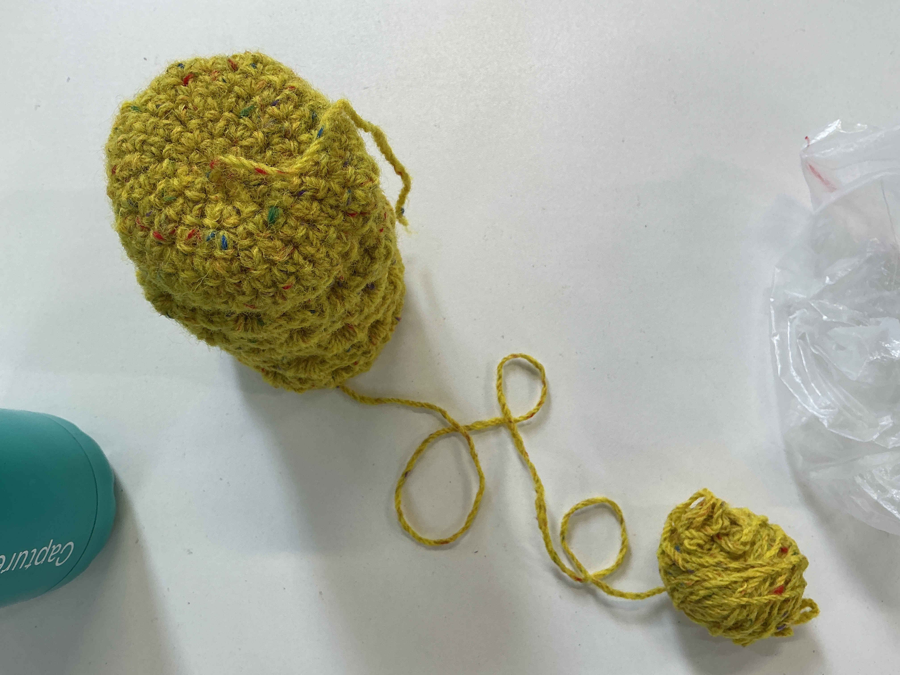
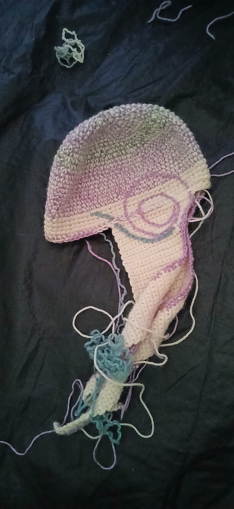
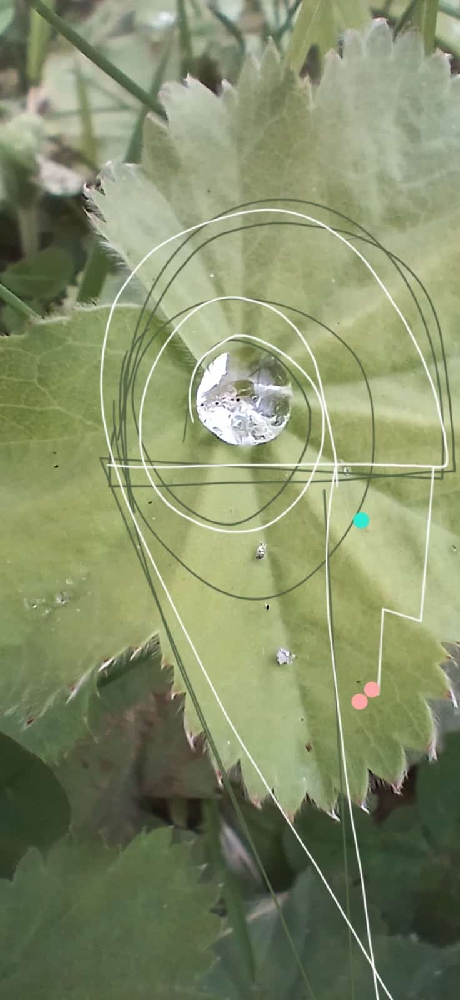

← Flaghouse
¿diseño?
Cuac / Crochet / Recent uploads
Image gallery
A growing archive of recent work by Laura Howard. Every image is tagged with the Cuac, crochet, hat, Laura, and Howard keywords for a clearer, more discoverable collection.

Cuac crochet hat Laura Howard · recent upload 
Cuac crochet study Laura Howard · recent upload 
Cuac hat illustration Laura Howard · recent upload 
Crochet / hat sketch Laura Howard · recent upload 
Cuac crochet sketch Laura Howard · recent upload 
Laura Howard / Cuac Recent upload 
Crochet hat study Laura Howard · recent upload 
Cuac visual experiment Laura Howard · recent upload
Back to the landing page →